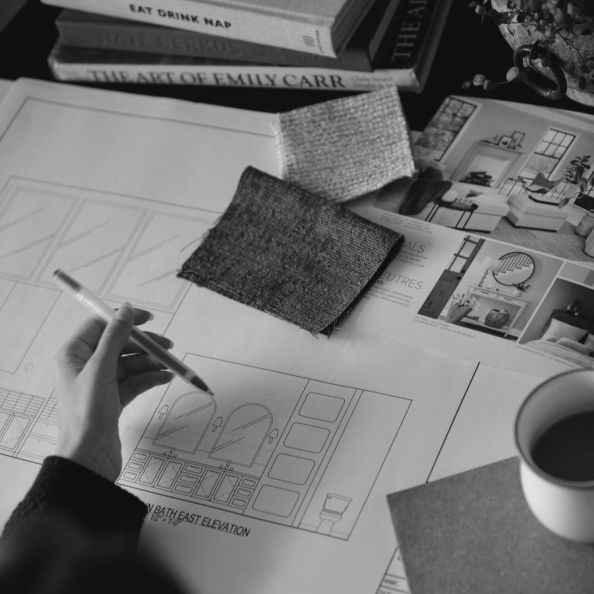

Drag & Drop Website BuilderMobirise is a free offline app for Windows and Mac to easily create small/medium websites, landing pages, online resumes and portfolios. 3100+ beautiful website blocks, templates and themes help you to start easily.
Mobile web traffic overtook desktop one in 2016 and will only grow, and that's why it's important to create websites that look good on all devices. No special actions required, all sites you make with the Builder are mobile-friendly. You don't have to create a special mobile version of your website, it will adapt automagically.
Mobirise is an easy and simple free website builder - just drop site elements to your page, add content and style it to look the way you like.
Free Website Builder offers a huge collection of 2500+ website blocks, templates and themes with thousands flexible options. Combine blocks from different themes to create a unique mix.

设计师与制图师虽起源不同，却同以视觉诠释世界。他们结合艺术与科学，在时代变迁中延续人类探索与表达的精神。
Though born from different origins, designers and cartographers share a visual language that bridges art and science, carrying forward humanity’s spirit of exploration and expression.
Drag & Drop Website Builder